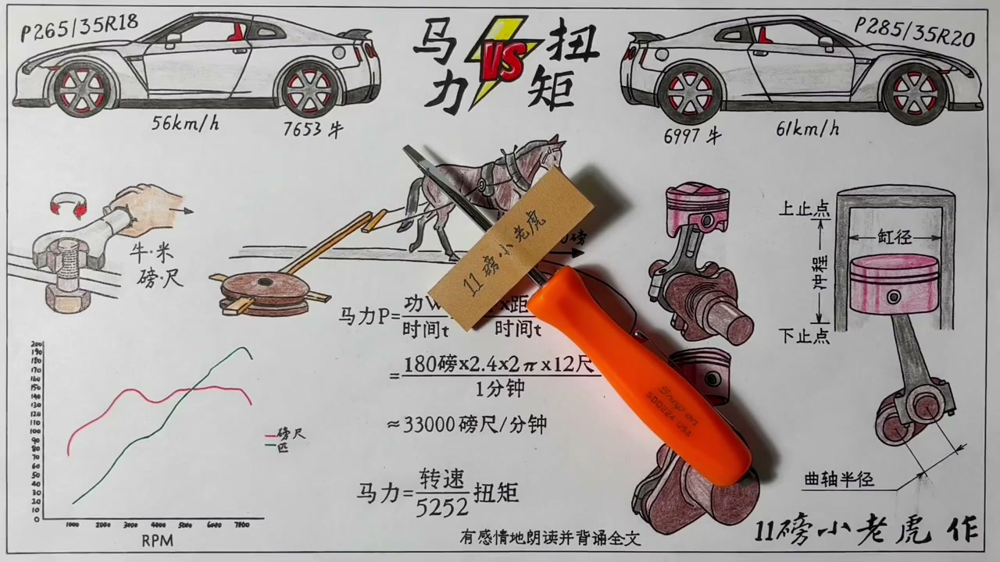
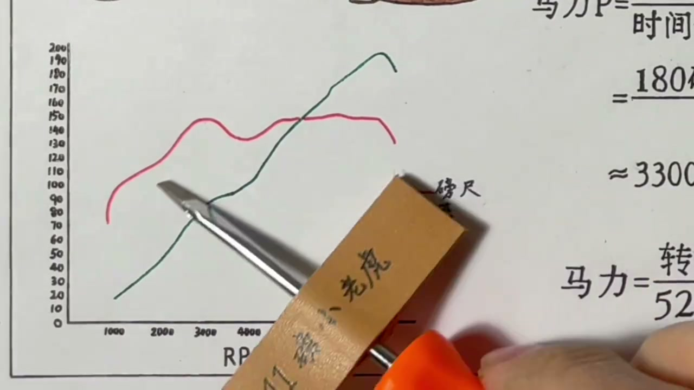
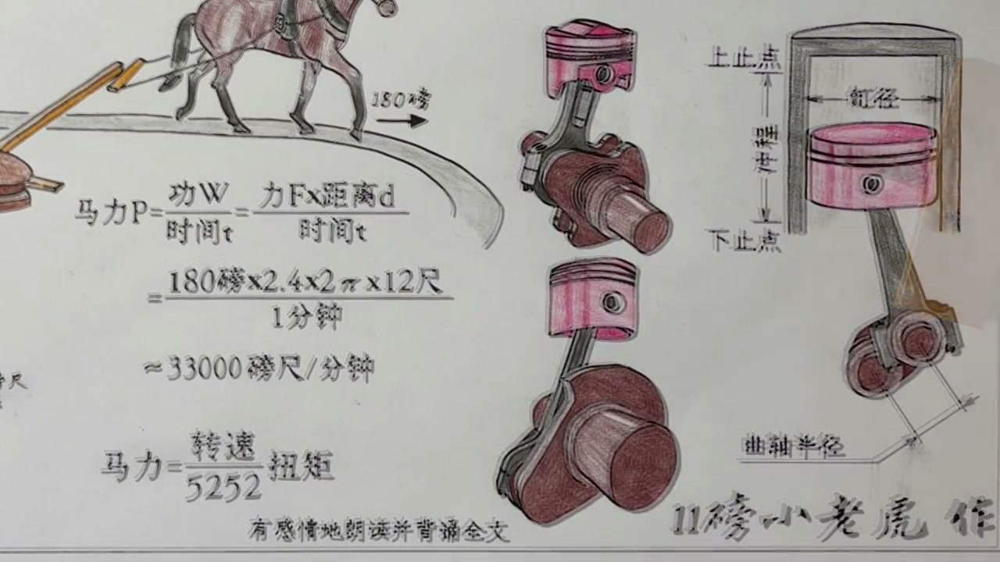
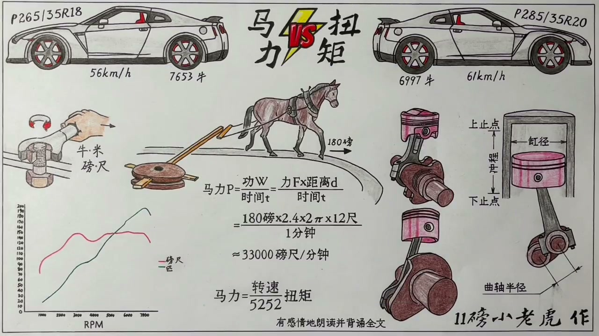

01
中文
对于发动机性能的主流评价标准，其实就是一个字：快。
EN
The mainstream yardstick for engine performance is one word: fast.
表达提示yardstick（评价标准）

Scene English · 汽车 · 发动机参数
Horsepower vs Torque (2): The Data and the Physics
🎧 语音讲解
Two Kinds of Fast
情境发动机性能的主流评价标准就是一个字：快。但快有两层意思：提速的快（quick，迅速敏捷）和极速的快（fast，纯粹快速）。提速考验扭矩，极速看马力。
对于发动机性能的主流评价标准，其实就是一个字：快。
The mainstream yardstick for engine performance is one word: fast.
表达提示yardstick（评价标准）
但这个快有两层意思：一个是提速的快，一个是极速的快。
But 'fast' splits into quickness (acceleration) and top speed.
表达提示quickness（提速）
提速考验的是扭矩，极速看的则是马力。
Acceleration tests torque; top speed tests horsepower.
表达提示top speed（极速）
yardstick（评价标准
quickness（提速

Horsepower Sets Top Speed
情境你可能零百4秒提速很快，但跑到240就到头了；我零百5秒多，却能轻松开到280、290，只要跑道足够长追上你是迟早的事。只要变速箱挡位够用，极速能跑多快看的是马力大小；从静止或固定速度开始提速有多猛、推背感多强，看的是扭矩。
零百4秒提速很快，但跑到240就结束了；我5秒多却能轻松开到280。
You hit 100 in 4s but top out at 240; I'm slower to 100 but cruise to 280.
表达提示top out（到头）
只要跑道足够长，比你快是迟早的事情。
Given a long enough runway, I'll pass you eventually.
表达提示runway（跑道）
极速看的是马力的大小，提速有多猛、推背感有多强，看的是扭矩。
Horsepower sets top speed; torque sets how hard it pulls.
表达提示pull（推背感）
top out（到头
runway（跑道

Two Extreme Examples
情境马自达6的2.5T四缸发动机，最大马力250匹，最大扭矩432牛米，扭矩比市面上同级高很多。本田S2000的F20C发动机正好相反，240匹马力但扭矩只有206牛米，连人家一半都不到。看似非常接近又非常悬殊的数据背后有讲究。
马自达6的2.5T发动机，最大马力250匹，最大扭矩居然达到432牛米。
The Mazda6 2.5T makes 250 hp and a hefty 432 Nm.
表达提示hefty（惊人的）
本田S2000的F20C正好相反：240匹马力，扭矩却只有206牛米。
The S2000's F20C flips it: 240 hp but just 206 Nm.
表达提示flips it（正好相反）
看似非常接近又非常悬殊的数据，背后到底是怎么个说法？
Nearly equal power, wildly different torque—what's the story?
表达提示wildly different（非常悬殊）
hefty（惊人的
flips it（正好相反

Reading the Dyno Chart
情境平时说的这车马力多少、扭矩多少，其实只是整个曲线上的最高点。真正性能的综合体现要看扭矩在各转速上的实际表现，日常开车不可能永远拉到五六千转找最大功率，低转速时的扭矩和马力输出对市区代步的消费者更有意义。先测出来的是红色扭矩曲线，再用公式算出各转速的马力连成绿色马力曲线。
平时说的马力多少、扭矩多少，只是曲线上的一个最高点。
The headline number is just the peak of the curve.
表达提示peak（最高点）
真正性能的综合体现，要看扭矩在各个转速上的实际表现。
Real performance lives in the torque curve across the rev range.
表达提示rev range（转速区间）
低转速时的扭矩和马力输出，对市区代步的消费者更有意义。
Low-rpm output matters far more for daily commuters.
表达提示commuter（通勤者）
peak（最高点
rev range（转速区间

Stroke Sets Torque
情境活塞从下止点到上止点的距离叫冲程，等于曲轴半径的两倍。用同样多的汽油在头顶爆出同样多的能量压到活塞上，曲轴半径越长，同样的力压下来力臂更长，产生的扭矩更大。马自达2.5T扭矩大很大程度靠长达100毫米的冲程；本田S2000冲程只有84毫米，力臂短扭矩自然大不到哪去。
活塞从最低点到最高点的距离就是冲程，等于曲轴半径的两倍。
The piston's travel from bottom to top is the stroke—twice the crank radius.
表达提示stroke（冲程）
同样的力压下来，曲轴半径越长、力臂越长，产生的扭矩就越大。
Same force, longer lever arm, bigger torque.
表达提示lever arm（力臂）
马自达2.5T扭矩大，很大程度靠长达100毫米的冲程。
The Mazda's fat torque owes a lot to its 100 mm stroke.
表达提示100 mm stroke（100毫米冲程）
本田S2000冲程只有84毫米，力臂短，扭矩肯定大不到哪去。
The S2000's 84 mm stroke means a short arm—no big torque.
表达提示short arm（短力臂）
stroke（冲程
lever arm（力臂
The Formula and 5252
情境用英制单位算，马力值等于转速乘以扭矩除以5252。转速低于5252转时系数小于1，马力数值比扭矩小，曲线在扭矩曲线下面；正好5252转时系数为1，两者数值相等，图中就是交叉点；高于5252转后马力值大于扭矩值。只要扭矩保持得差不多，越坚持到高转速系数越大，马力数字就开始爬升。这就是本田S2000扭矩一般但马力拉到240匹的秘诀：全力往高转拉，原厂红线9500转。
马力值实际上是转速乘以扭矩再除以5252。
Horsepower equals rpm × torque ÷ 5252.
表达提示formula（公式）
转速低于5252转，马力数值比扭矩小；高于5252转，马力值就大于扭矩值。
Below 5252 rpm hp trails torque; above it, hp leads.
表达提示trail（落后）
只要扭矩保持得差不多，越坚持到高转速，马力数字就开始爬升。
Hold torque and push the revs—hp climbs.
表达提示climb（爬升）
S2000的秘诀就是全力往高转拉，原厂红线转速能达到9500转。
The S2000's trick: scream to a 9,500 rpm redline.
表达提示redline（红线转速）
formula（公式
trail（落后

Long Stroke Caps the RPM
情境马自达2.5T扭矩这么牛为什么不能把转速拉高刷马力？依然是长冲程的缘故：曲轴半径越大，活塞上下运动起来越费劲、越不稳定；半径小的反而越转越快、转得风生水起。为得到更大扭矩而设计的长冲程，反过来限制了最高转速，从而限制马力输出。马力、扭矩、转速三者互相牵制又互相成就，一起决定发动机特性，就像人的性格各有特点。
马自达不能拉高转速，原因依然还是长冲程。
The Mazda can't rev high—again, the long stroke.
表达提示long stroke（长冲程）
曲轴半径越大，活塞转起来越费劲越不稳定。
A bigger crank radius spins harder and less stably.
表达提示unstable（不稳定）
为得到更大扭矩而设计的长冲程，反过来限制了最高转速，从而限制马力输出。
The long stroke that boosts torque also caps rpm—and therefore hp.
表达提示caps（限制）
马力、扭矩、转速三者互相牵制又互相成就，就像人的性格各有特点。
The three fight and reinforce each other, like different personalities.
表达提示reinforce（互相成就）
long stroke（长冲程
unstable（不稳定

Diesel: The Torque Extreme
情境柴油机靠压燃点燃，必须压得非常狠，压缩比低不了。以康明斯3.8升四缸柴油机为例，压缩比17.2:1，活塞要顶得很高压缩比才大，冲程短不了，曲轴半径小不了，天然决定力臂特别长、扭矩大。但同样因为曲轴半径大，转速上不去，2600转就到头，马力只有168匹，扭矩却达600牛米。
柴油机靠压燃点燃，压缩比低不了，活塞要顶得很高，冲程短不了。
Diesels are compression-ignited, needing a huge CR and a long stroke.
表达提示compression ratio（压缩比）
康明斯3.8升柴油机压缩比17.2比1，冲程115毫米。
This Cummins 3.8L runs a 17.2:1 CR with a 115 mm stroke.
表达提示Cummins（康明斯）
转速2600转就到头，马力只有168匹，扭矩却能达到惊人的600牛米。
It revs to just 2,600, making 168 hp but a monster 600 Nm.
表达提示monster（惊人的）
compression ratio（压缩比
Cummins（康明斯
F1: The Horsepower Extreme
情境F1是追求马力的极端：2006年F1发动机最大扭矩350牛米左右（和买菜汉兰达差不多），但马力却爆发到接近800匹。所有黑科技都只是手段，落到公式上就是扭矩乘转速除以5252。它硬靠着超过2万转的转速把马力拉出来，曲轴半径设计得非常迷你，冲程只有39.8毫米，运动距离不足4厘米，和小仓鼠跑跑轮差不多。
2006年F1发动机最大扭矩350牛米左右，和买菜的汉兰达差不多。
A 2006 F1 engine made ~350 Nm—about what a family SUV makes.
表达提示family SUV（家用SUV）
但它的马力却能爆发到接近800匹。
Yet its output approached 800 hp.
表达提示800 hp（800马力）
它是硬靠着超过2万转的转速把马力拉出来的。
It's wrung out by revving past 20,000 rpm.
表达提示20,000 rpm（两万转）
F1的曲轴半径设计得非常迷你，冲程只有39.8毫米，运动距离不足4厘米。
The F1 crank is tiny—a 39.8 mm stroke, under 4 cm of travel.
表达提示miniature（迷你）
family SUV（家用SUV
800 hp（800马力
Bolt vs the Strongman
情境大马力的F1好比博尔特，跑起来风驰电掣；大扭矩的柴油机好比大力士。大家轻装上阵时你肯定跑不过博尔特；但背上一点负载，博尔特就跑不过大力士了。所以马力和扭矩谁更厉害要分场景看：低转速早发力大扭矩适合越野拉货，高马力适合追求极速。
大马力的F1就好比博尔特，大扭矩的柴油机就好比大力士。
Big-hp F1 is Usain Bolt; big-torque diesel is a strongman.
表达提示strongman（大力士）
轻装上阵你肯定跑不过博尔特，但背上一点负载，博尔特就跑不过大力士了。
Unloaded, Bolt wins; loaded, the strongman does.
表达提示loaded（负重）
低转速早发力大扭矩适合越野拉货，高马力适合追求极速。
Early, big torque suits off-roading and hauling; high hp suits top speed.
表达提示off-roading（越野）
strongman（大力士
loaded（负重
The Answer
情境开头提的疑问马力和扭矩到底谁更厉害，现在能不能回答出来？如果你能直接回答，那可能还没彻底领悟；如果你觉得要看怎么说，那你大概率是搞懂了。很多问题并不是非黑即白，知道的东西越多越觉得不好回答。
如果你觉得马力和扭矩谁厉害要看怎么说，那你大概率还是搞懂了的。
If your answer is 'it depends,' you've probably got it.
表达提示it depends（看情况）
很多问题并不是简单的非黑即白。
Few questions are simply black and white.
表达提示black and white（非黑即白）
你知道的东西越多，你就越觉得这个问题不太好回答。
The more you know, the harder the question gets.
表达提示the more you know（知道得越多）
it depends（看情况
black and white（非黑即白
说quick和fast
说极速与加速
说两个极端
说冲程
说5252
说怎么选
峰值不代表一切。
冲程决定转速上限。
柴油机扭矩为王。
F1马力靠转速硬拉。
要看怎么说。